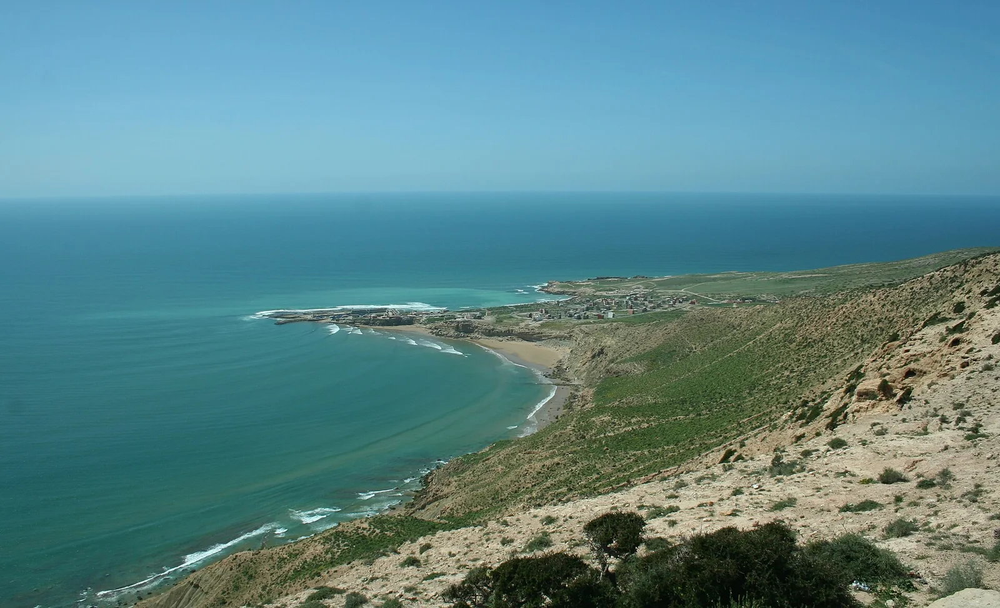

Imsouane — La Cathédrale
Maroc · surf, paddle, baignade

Une droite qui déroule interminablement au fond d’une baie de pêcheurs. Vague lente et docile : c’est le spot où l’on apprend à tenir une vague longtemps.
- Lieu
- Maroc
- Niveau
- Débutant
- Activités
- surf, paddle, baignade
- Type d'eau
- Mer / océan
- Coordonnées
- 30.84, -9.82 (position approximative du secteur)
Dangers à connaître
- Très fréquentée : respecte la priorité et la file d’attente au pic.
- Port de pêche actif, ne coupe pas la route des barques.
Le conseil d'Ocean Buddy
Rame jusqu’au bout de la baie et laisse-toi porter : la vague fait le travail.
Ouvrir dans Ocean Buddy Télécharger sur l'App Store
Source : Description historique Ocean Buddy · vérification externe en attente.